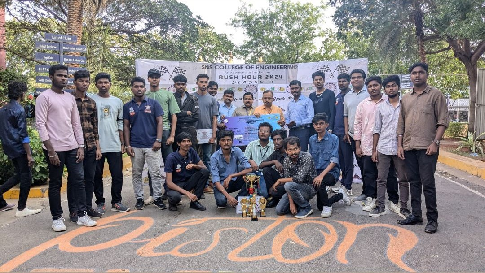

Dr. M. S. Geetha Devasena is currently working as a Professor in the Department of Computer Science and Engineering. She received her Bachelor's in Computer Science and Engineering from Madurai Kamaraj University in the year 1997.She received her Master's in Software Engineering from Anna University in the year 2006. She completed her Ph.D in Information and Communication Engineering (ICE)at Government College of Technology, Coimbatore under Anna University, Chennai in the year 2013. She has more than 22 years of experience in teaching and 12 years of experience in Research and Development. She is a recognized Research Supervisor of Anna University and has been guiding many Research Scholars. She has about 30 technical and research publications to her credit in the National, International Conferences and reputed International Journals including Springer and Elsevier Book Chapters. She is a Reviewer for refereed journals including IET Software Journal, GRD Journals, and Springer AISC Series.She has received research Grants from AICTE under Research Promotion Scheme (RPS) in 2013.
The students of III year B.Tech IT, Harisudhan M (2205038), Arunmozhi Varman K (71812205011), Nagasanthoshini K (71812205062), and Mally Bavasya V (71812205049) participated in Smart Industry 4.0 Hackathon organized by Chennai Institute of Technology, Chennai and our students won the third prize with the cash prize of Rs. 75,000/- on 15.10.2024.
Go-Kart Rush Hour Team KNIGHTS from the Department of Mechanical Engineering for Winning the Overall Championship at the RUSH HOUR 2024 GO - KART Race Event. They have Secured the titles in Best Autocross, Skid-pad, Endurance and the Best Driver Award in the 130CC Category, along with a Cash Prize of Rs.17,000 at SNS College of Engineering and Technology on 20-09-2024.